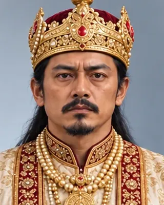

1751–1765
ৰাজেশ্বৰ সিংহ
1751–1769 · Thirty-third Ahom king

Fourth son of Rudra Singha. Sheltered Bhagyachandra of Manipur, sent the failed 1765 expedition, and married Kuranganayani in 1768. Much of the governing fell to Kirti Chandra Borbarua.
Died at Dergaon in 1769. Added three underground storeys to the Kareng Ghar (Talatal Ghar).
Record confidence: high.
1751–1765

1751

1752

c. 1750s–1760s

1765–1768

1768